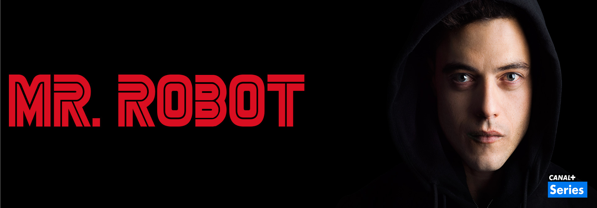

fff
Breve descripción Breve descripción Breve descripción Breve descripción Breve descripciónBreve descripción Breve descripción Breve descripción Breve descripción Breve descripciónBreve descripción Breve descri
1/1/2017